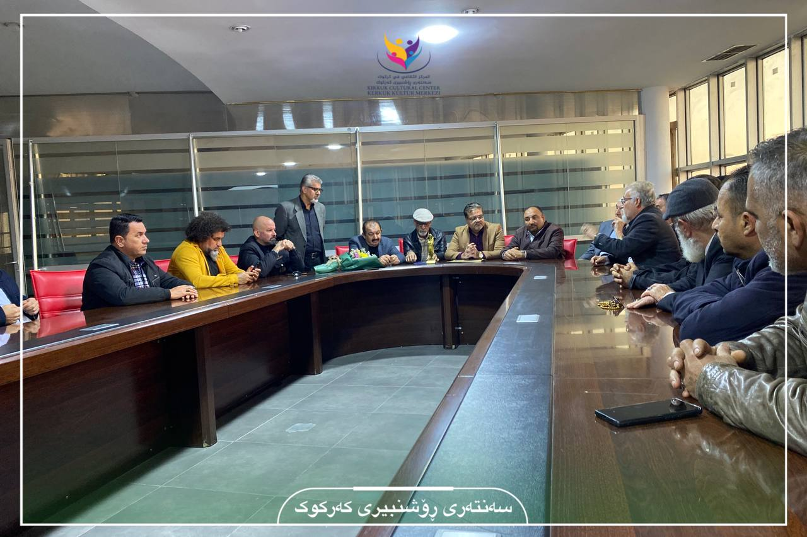
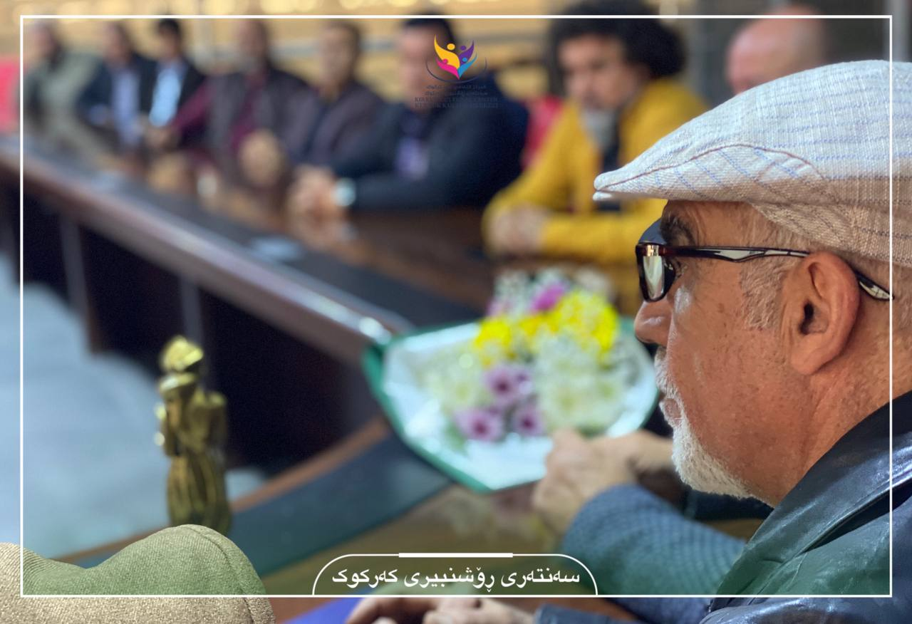
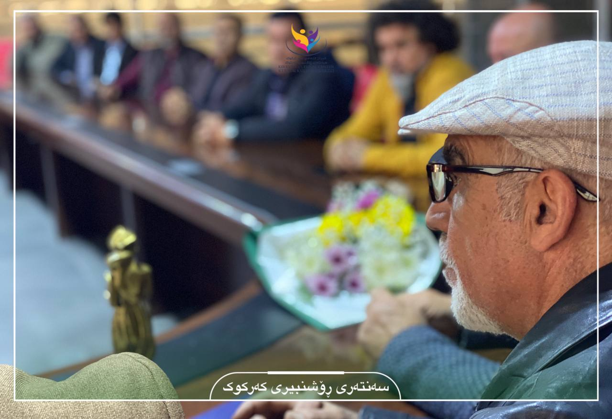
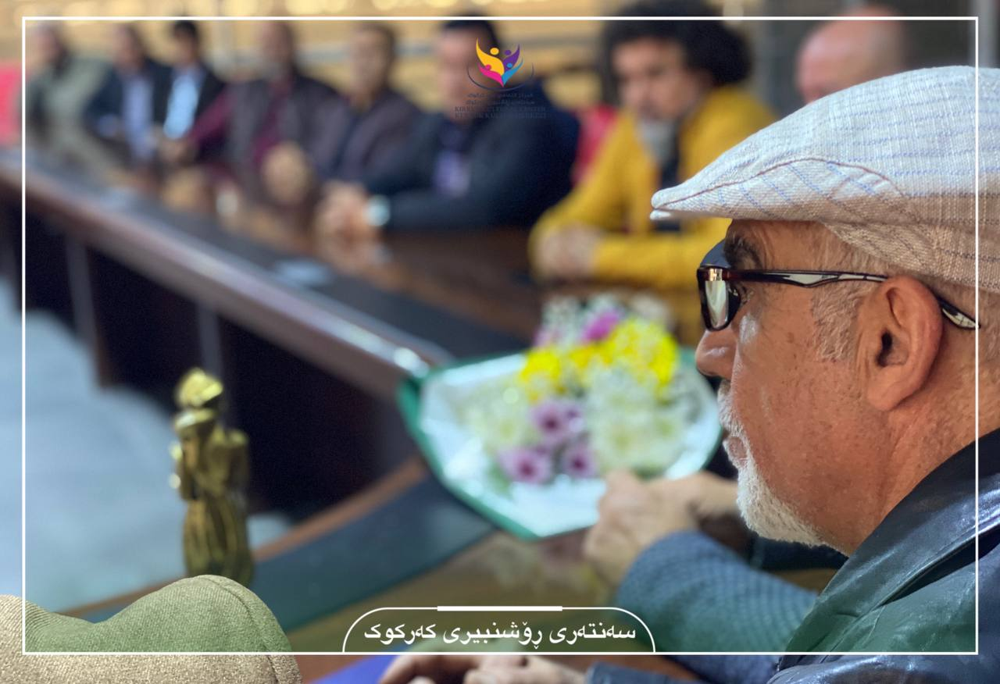
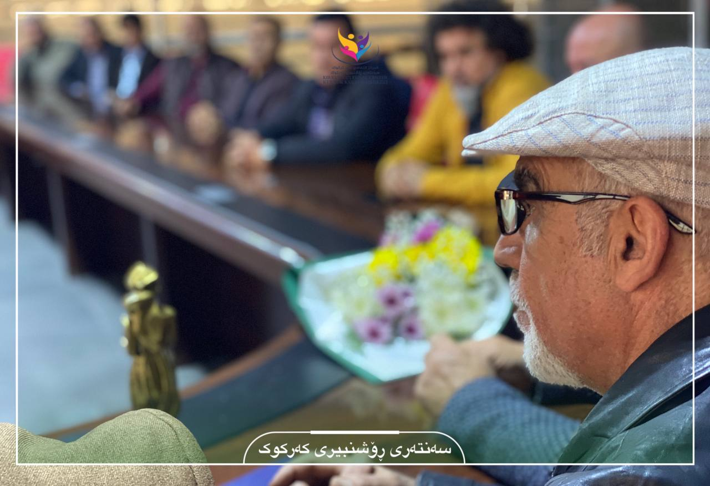

 



نووسەر و شانۆکار، مەریوان زەنگەنە لە پێشبڕکێی تێکستی شانۆیی، لە نۆزدەیەمین خولی ڤیستیڤاڵی نێودەوڵەتی (شانۆیی کوردی سەقز) خەڵاتی باشترین دەقی شانۆیی بەدەستهێنا
فێستیڤاڵی شانۆی سەقز یەکێکە لە بەنێوبانگترین فیستیڤاڵەکانی شانۆ، کە ساڵانە لە شاری سەقزی ڕۆژهەڵاتی کورستان ئەنجام دەدرێت، ئەم فێستیڤاڵە، ساڵی 1999یەکەم خولی دەستی پێکرد و تا ئێستا بەردەوامە
نووسەر و شانۆکار مەریوان زەنگەنە خەڵکی شاری کەرکووکە و بە شانۆیی (گەمەیەکی دژوار) بەشداری لە فیستیڤاڵی نێودەوڵەتی شانۆی کوردی سەقز کرد کە هەفتەی ڕابردوو لە شاری سەقز بەڕێوە چوو
لە فیشتیڤاڵەکەدا مەریوان زەنگەنە لەنێوان چل تێکستی شانۆییدا توانیی پلەی یەکەم بەدەست بهێنێت بۆ دەقە شانۆییەکەی و لەنێوان هەموویاندا ببێتە یەکەم و خەڵاتەکە بباتەوە
جێی باسە فیستیڤاڵەکە ساڵانە لە وەرزی پاییزدا بە بەشداری چەندین کەسایەتیی نێو بواری هونەر بەڕێوە دەچێت